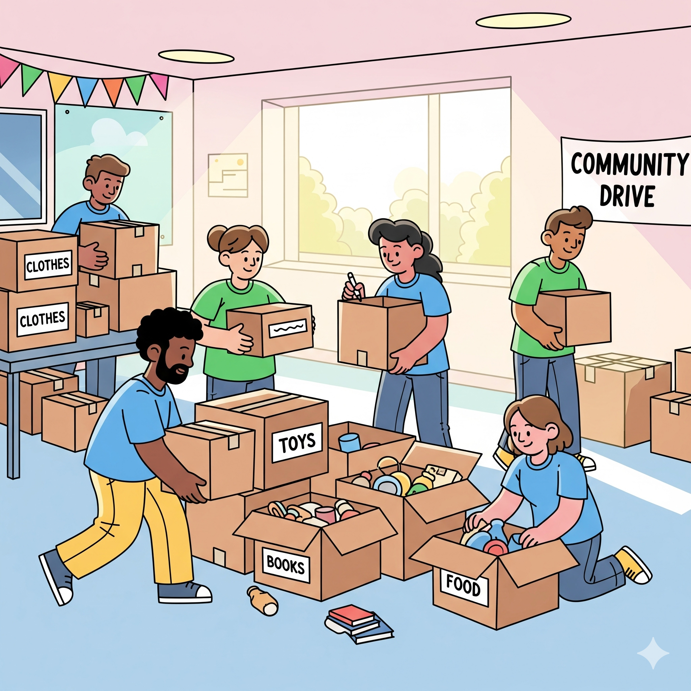

Projetos em destaque
🌻 Escuta Amiga
O projeto Escuta Amiga oferece atendimento online e presencial para pessoas que precisam conversar, desabafar ou lidar com momentos difíceis. Nossos voluntários são treinados para oferecer acolhimento e escuta empática.

🤝 Doe Esperança
Com o projeto Doe Esperança, arrecadamos fundos e doações para manter nossos atendimentos gratuitos e formar novos voluntários. Cada contribuição faz a diferença!
